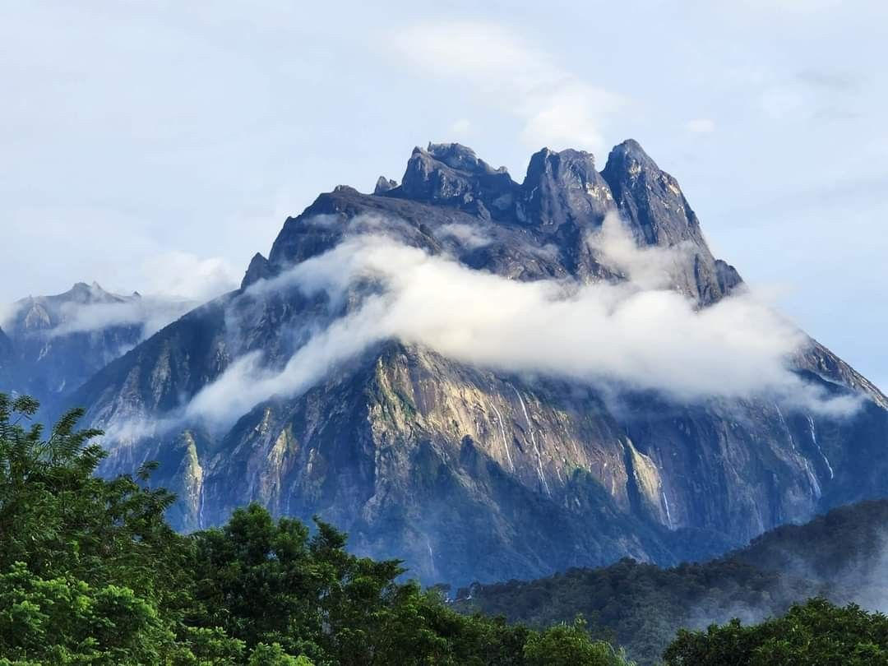
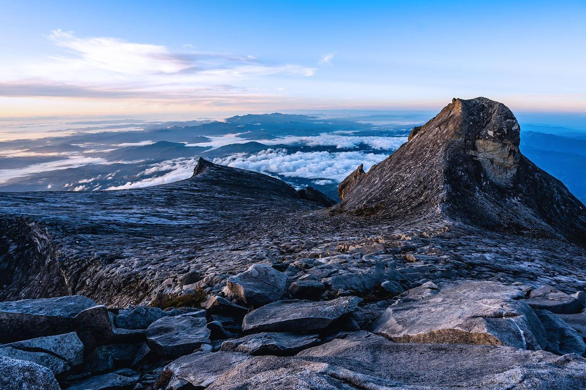
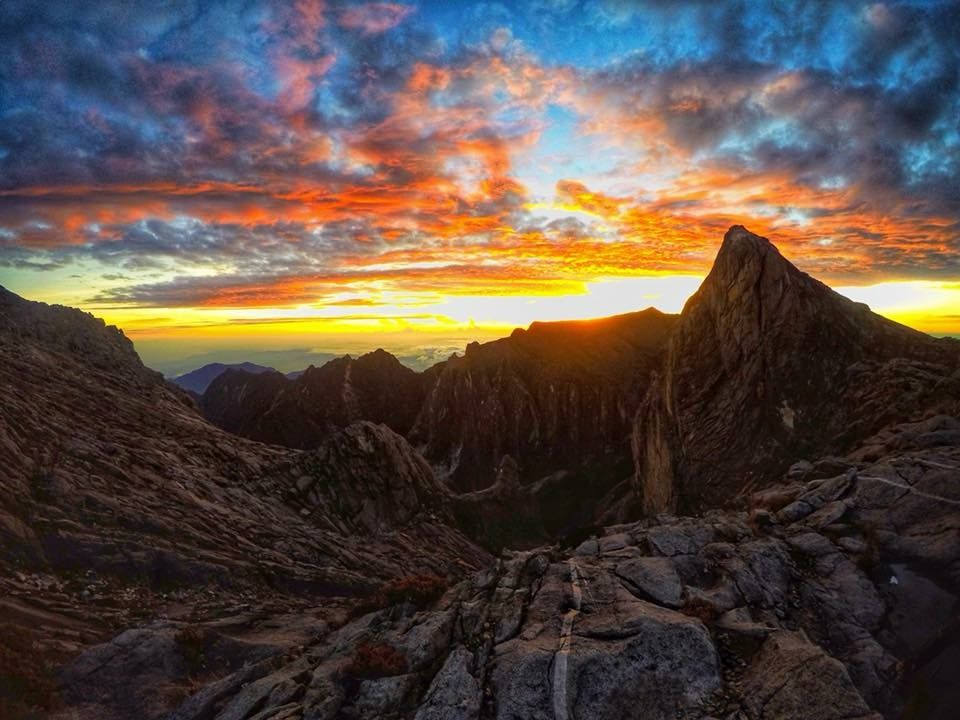

Tentang Gunung Kinabalu
Gunung Kinabalu merupakan gunung tertinggi di Asia Tenggara dengan ketinggian 4,095 meter dari aras laut. Ia terletak di Taman Kinabalu yang telah diiktiraf sebagai Tapak Warisan Dunia UNESCO sejak tahun 2000.
Gunung ini terkenal dengan biodiversiti yang sangat tinggi. Terdapat lebih daripada 5,000 spesies tumbuhan, 300 spesies burung dan 100 spesies mamalia. Bunga Rafflesia yang terbesar di dunia juga boleh ditemui di sini.

Aktiviti Menarik
1. Mendaki Gunung: Cabaran ke puncak Low's Peak dalam 2 hari 1 malam.
2. Taman Botani: Lihat pelbagai spesies orkid dan tumbuhan unik.
3. Kolam Air Panas Poring: Rileks selepas mendaki.
4. Canopy Walk: Jambatan gantung 40 meter di atas tanah.
5. Lihat Rafflesia: Bunga terbesar di dunia jika bermusim.
Video Pemandangan
Galeri Gambar



Maklumat Pantas
- Lokasi: Ranau, Sabah
- Ketinggian: 4,095 meter
- Masa Terbaik: Mac - September
- Aktiviti: Mendaki, Canopy Walk, Hot Spring
- Kemudahan: Laban Rata, Pusat Pelawat, Chalet
Tips Pendaki
- Tempah permit 3 bulan awal
- Bawa jaket sejuk dan sarung tangan
- Mulakan daki awal pagi
- Jaga stamina dan hidrasi